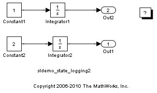
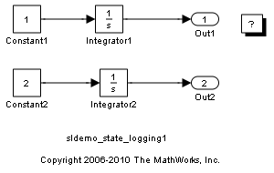

構造体形式での状態のログ
このデモでは、状態をN (状態の数) 列の行列として配列形式でログを作成するという従来の方法に比べ、Simulink® モデルの状態軌跡を構造体形式でログを作成する利点を示します。ログが作成される行列の列に沿った状態の順序は、コンパイル時に Simulink エンジンによって決められるブロックのソート順序に左右されます。さまざまな要因がブロックのソート順序に影響し、このソート順序によって状態の順序が変わります。
このデモで示す、構造体形式で状態をログを作成する方法では、ブロック名を状態軌跡と一緒に保存することで、状態の順序問題を回避することができます。
目次
配列形式でのログの問題点
既定の設定では、Simulink は状態軌跡を配列形式でログを作成します。理由は、この形式のデータが M 行 N 列の行列として、MATLAB® で操作しやすいからです。ログが作成される行列の列に沿った状態変数の順序は、ブロックのソート順序に左右されます。行列の列と状態の間のマッピングが固定されていると想定する MATLAB コードは、モデルの変化が原因でブロックのソート順序が変わると中断されることがあります。
たとえば、以下の 2 つのブロック線図を考えてみます。
mdl1 = 'sldemo_state_logging1'; mdl2 = 'sldemo_state_logging2'; open_system(mdl1); open_system(mdl2); 
2 つのブロック線図のブロックは同じで、唯一の違いは出力端子の順序です。モデルのシミュレーションを実行し、状態を配列形式でログを作成します。
opts1 = simset(simget(mdl1),'SaveFormat','Array'); [t1,x1] = sim(mdl1, [], opts1); opts2 = simset(simget(mdl2),'SaveFormat','Array'); [t2,x2] = sim(mdl2, [], opts2);
Integrator ブロックの相対的順序が 2 つのブロック線図で異なっていることに注意してください。これにより、ログが作成される状態 x1 と x2 が異なることになります。列と状態の間のマッピングが異なるからです。
isequal(x1, x2)
ans =
0
構造体形式でのログの使用
再びモデルのシミュレーションを実行しますが、今回は、状態を構造体形式でログを作成します。
opts1 = simset(simget(mdl1),'SaveFormat','Structure'); [t1,x1s]=sim(mdl1,[],opts1); x1s opts2 = simset(simget(mdl2),'SaveFormat','Structure'); [t2,x2s]=sim(mdl2,[],opts2); x2s
x1s = time: [] signals:[1x2 struct] x2s = time: [] signals:[1x2 struct]
状態軌跡が、これらの状態に対応するブロックの名前 xs.signals(k).blockName と共に、xs.signals(k).values にログが作成されます。以下のように、状態を行列に抽出できます (配列形式の場合と同様)。
x1a = [x1s.signals.values]; x2a = [x2s.signals.values];
しかし、状態の順序問題 (x1a および x2a が、配列形式の場合に得られる x1 および x2 と同じであるという問題) はまだ未解決です。
isequal(x1a, x2a)
ans =
0
状態順序が固定された状態行列の取得
状態の順序の問題を解決するために、値と共に保存されたブロック名を使用して、状態を固定順序 (ブロック名のアルファベット順) にマッピングします。
[unused, idx1] = sort({x1s.signals.blockName});
x1 = [x1s.signals(idx1).values];
[unused, idx2] = sort({x2s.signals.blockName});
x2 = [x2s.signals(idx2).values];
isequal(x1, x2)
ans =
1
x1 と x2 の信号配列をブロック名のアルファベット順に並べ替え、その順序で値フィールドを行列 x1 と x2 に抽出することで、ログが作成される行列の列と状態の間のマッピングを固定して、状態を行列にログを作成する方法が得られます。